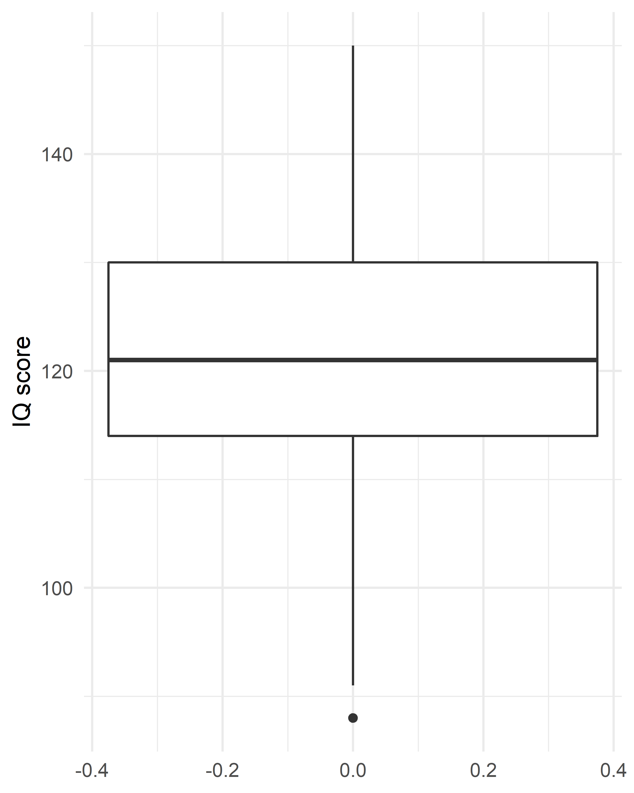

\(t\)-Test bei einer Stichprobe

Begeben wir uns in die Welt der Magie, Muggel und Zauberstäbe; tauchen wir ein in die Welt von Harry Potter (Rowling, 1997). Auch in Hogwarts gibt es viel zu entdecken und statistisch zu entschlüsseln. Vielleicht kennst Du die vier Häuser von Hogwarts: Gryffindor, Hufflepuff, Ravenclaw und Slytherin. Jedem dieser Häuser werden verschiedene Eigenschaften nachgesagt, und jeder Schüler wird ausgehend von seinen Eigenschaften durch den sprechenden Hut einem der Häuser zugeteilt. Genau diese Eigenschaften der Schüler in den Häusern können wir uns nun einmal anschauen.
Pakete
Alle Berechnungen und Abbildungen können wir mit unseren Standardpaketen durchführen. Wir benötigen das tidyverse zum Data Wrangling und zur Visualisierung der Daten. haven benötigen wir für den Import von SPSS-Dateien, rstatix für statistische Analysen und skimr für schnelle deskriptive Statistiken.
library(tidyverse)
library(haven)
library(rstatix)
library(skimr)Beispiel
Das Haus Ravenclaw soll durch ausgesprochene Intelligenz punkten. Nun gut, gehen wir dem einmal auf den Grund. Der Intelligenzquotient (IQ) ist so normiert, dass sein Mittelwert normalerweise 100 beträgt und die Standardbweichung 15. Wir haben IQ-Daten von Mitgliedern des Hauses Ravenclaws im Datensatz ravenclaw.sav.
ravenclaw <- read_spss("data/ravenclav.sav")
ravenclaw## # A tibble: 48 x 2
## id intelligence
## <chr> <dbl>
## 1 1 125
## 2 2 88
## 3 3 124
## 4 4 125
## 5 5 102
## 6 6 119
## 7 7 114
## 8 8 130
## 9 9 108
## 10 10 130
## # ... with 38 more rowsVoraussetzungen
Es gelten die üblichen Voraussetzungen des GLM
EDA
Mit skim() und ggplot2 können wir uns die Daten etwas genauer angucken.
skim(ravenclaw)| Name | ravenclaw |
| Number of rows | 48 |
| Number of columns | 2 |
| _______________________ | |
| Column type frequency: | |
| character | 1 |
| numeric | 1 |
| ________________________ | |
| Group variables | None |
Variable type: character
| skim_variable | n_missing | complete_rate | min | max | empty | n_unique | whitespace |
|---|---|---|---|---|---|---|---|
| id | 0 | 1 | 1 | 2 | 0 | 48 | 0 |
Variable type: numeric
| skim_variable | n_missing | complete_rate | mean | sd | p0 | p25 | p50 | p75 | p100 | hist |
|---|---|---|---|---|---|---|---|---|---|---|
| intelligence | 0 | 1 | 121.15 | 13.13 | 88 | 114 | 121 | 130 | 150 | ▁▃▇▅▂ |
Aus der Übersicht können wir entnehmen, dass wir erst einmal Daten von 48 Ravenclaws haben. Der IQ (von mir dreister- und fälschlicherweise als intelligence betitelt) der Stichprobe ist im Mittel bei 121 (sowohl Mittelwert als auch Median) – nicht schlecht! Die Standardabweichung beträgt 13.1, der niedrigste Wert 88.1 und der höchste 150.3. In Ravenclaw scheinen also ganz schöne Brains am Werke zu sein.

Mit einem Boxplot werden die kennwerte, die uns die Funktion skim() ausgibt noch einmal übersichtlich dargestellt. Die Box an sich (ohne die Whiskers) enthält 50% der Daten und ist somit so lang wie der Interquartilsabstand. Die dicke schwarze Linie kennzeichnet den Median, der in diesem Fall 121 beträgt..
Die Normalverteilungsannahme können wir mit einem QQ-Plot überprüfen. Wir haben in dieser Stichprobe “nur” 48 Probanden und somit ebenso viele Datenpunkte. Optimal wäre es, wenn alle Punkte möglichst nah an der Diagonalen liegen, was hier ungefähr der Fall ist. Mit mehr Datenpunkten hätten wir vielleicht ein eindeutigeres Muster gehabt, aber so sieht das auch gut aus. 
Auch wenn ich von Tests zur Normalverteilung der Daten entschieden abrate, kann man es den Daten trotzdem antun.
ravenclaw %>%
shapiro_test(intelligence)## # A tibble: 1 x 3
## variable statistic p
## <chr> <dbl> <dbl>
## 1 intelligence 0.980 0.583Da \(p = .631\), weicht die hier betrachtete Verteilung der IQ-Werte der Ravenclaws nicht signifikant von der Normalverteilung ab. Das heißt jedoch nicht, dass die Daten normalverteilt sind!
Durchführung
Wir haben nun eine gute Idee davon, in welche Richtung unsere Ergebnisse gehen könnten, aber unterscheidet sich dieser Wert jetzt vom Bevölkerungsdurchschnitt?
ravenclaw %>%
t_test(intelligence ~ 1, mu = 100)## # A tibble: 1 x 7
## .y. group1 group2 n statistic df p
## * <chr> <chr> <chr> <int> <dbl> <dbl> <dbl>
## 1 intelligence 1 null model 48 11.2 47 8.22e-15Interpretation
Der \(p\)-Wert ist unter 0.05, also ist der mittlere IQ der Ravenclaws signifikant verschieden von 100. Mehr gibt es an dieser Stelle eigentlich schon gar nicht zu sagen, der Einstichproben-\(t\)-Test ist relativ einfach.
Berichten
Will man diesen Unterschied berichten, dann kann man etwas schreiben wie:
Ravenclaw-students’ mean IQ was \(121.15\) (\(SD = 13.11\)), which was significantly different from the test value 100, \(t(47) = 11.18, p < .001\).
Literatur
Rowling, J. K. (1997). Harry Potter and the Philosopher’s Stone. Bloomsbury.